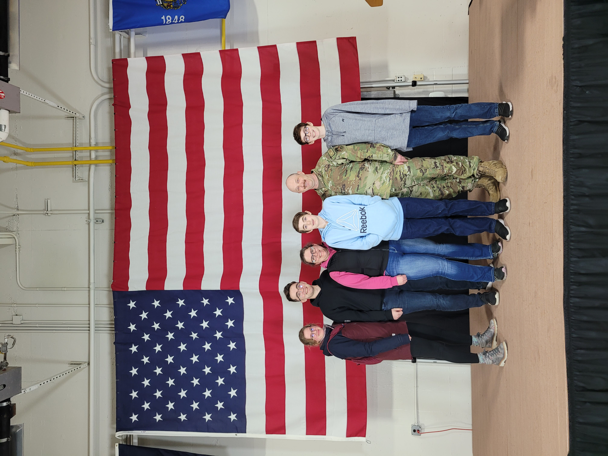

Bio: I am Tim Larson, a fifth year student at the University of St Thomas! I am majoring in Computer Science and minoring in Aerospace Studies. I am on track to commision into the United States Air Force in May, where I will be an Operations Research Analyst! During my time in the Air Force I look forawrd to pursuing a masters degree in Data Analytics through the Air Force Institute of Technology at Wright-Patterson Air Force Base, near Dayton Ohio. Another cool oppurtunity I am interested in through the Air Force is the possibility of becoming a test pilot. After the Air Force, I hope to work for a government agency like the NSA or FBI.
Family: I am very proud of my family. My fiancee Ivy is a recent graduate from UWRF and is currently working for a landscaping company here in St. Paul. My dad is someone I look up to a lot, he is in the Air National Guard and he works for a bank as an Information Security engineer. My mom is my "go-to rubber duck", whenever I need help on computer science homework she always seems to help me find the answer. She works as an IT Project Manager at the same bank as my dad. I have two younger brothers that go to Stillwater High School and Stillwater Middle School.
